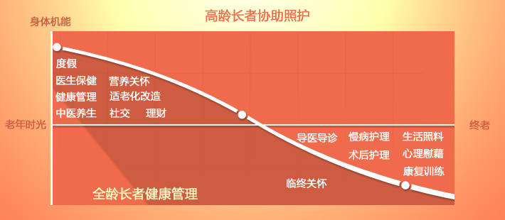

健康管理服务
您知道吗？身体发出信号，及时采取有效干预措施，可以大大降低风险。科学管理我们的身体，持续改善我们的健康。 通过我们的云端健康照护信息平台和我们的私人专业护理师、营养师、中医保健师，自己在家就可以做体检，控病防病，不用天天跑医院。 子女还可以通过账号登陆随时了解父母的健康数据，家人关爱都在父母身边。
建立健康档案
为客户整理健康、诊疗情况等相关资料，建立个人电子健康档案，作为实施后续其它健康管理服务的基础,方便查询自己的健康资料。
健康评估服务
通过健康评估系统定期为客户进行健康评估，全面评估你的健康状况，并出具健康评估报告
健康管理计划
根据您的评估情况，制定饮食管理、生活方式管理、运动管理、身体指标管理等方面的计划
健康跟踪及改善服务
通过我们的私人护士和服务系统为客户建立长期趋势化的健康监控测量，和改善性服务
个性化检测服务
提供定期的居家体检服务和中医保健服务
健康体检服务
同城、异地健康体检服务、电子体检档案